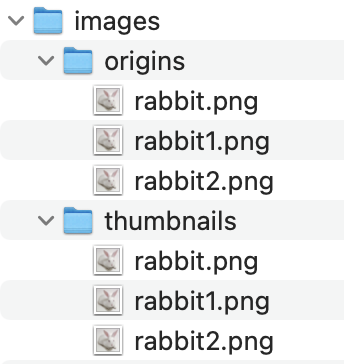

JAVA Servlet 프로젝트) Cafe(웹 사이트) 만들기 29 - 파일업로드 기능 수정(중복파일명 처리)
개발환경
- MacBook Air (M1, 2020)
- OpenJDK 8
- Eclipse 2021-12
- tomcat 8.5
- MySQL Workbench 8.0.19
시작
- 2022.3.4 ~
주제
- 웹 백엔드 수업 중 중간 과제로 개인 프로젝트를 진행하게 되었다.
- 회원가입/로그인/탈퇴 등 기본적인 회원관리 시스템을 가진 웹 사이트를 만드는 것이다. 주어진 기한은
한 달 - 나는
다음 카페를 소규모로 만들어 보기로 했다. 평소 자주 이용하기도 했고 과제의 평가 기준에서 요구하는 기능들을 다 담고 있기도 했기 때문에 이번 기회에 구현해 보면 그동안 배운 것들을 활용하기에 좋을 거 같았다. - 평가 기준에 사이트의 디자인 구현(HTML/CSS 등 프론트엔드)은 포함되지 않기 때문에 본인이 쓰고 싶은 HTML/CSS 템플릿을 구한 뒤 회원 관리 기능을 구현하면 된다.
진행상황
- 기존에 만들었던 파일업로드 기능에 수정이 필요했다.
- 처음에 만들었던 형태는 단순한 업로드와 다운로드 기능만 있었기 때문에 첨부파일을 수정하거나 삭제했을 때 해당 부분을 반영하는 로직이 없었고 중복 파일명을 처리하는 부분도 없었다. 그래서 중복파일명 처리와 수정/삭제 처리를 추가했다.
- 관련 내용은 에러해결 Log) JAVA JSP Servlet 글 내용 수정할 때 첨부파일이 사라지는 문제 에서도 확인할 수 있다.
FileUpload.java
- 먼저
DB테이블에서 실제 파일명을 저장할 필드도 만들었다.
package com.project.cafe.board.action;
import java.io.File;
import javax.servlet.ServletContext;
import javax.servlet.http.HttpServletRequest;
import com.oreilly.servlet.multipart.DefaultFileRenamePolicy;
import com.oreilly.servlet.multipart.FilePart;
import com.oreilly.servlet.multipart.MultipartParser;
import com.oreilly.servlet.multipart.ParamPart;
import com.oreilly.servlet.multipart.Part;
import com.project.cafe.board.db.BoardDTO;
import net.coobird.thumbnailator.Thumbnails;
import net.coobird.thumbnailator.name.Rename;
public class FileUpload
{
public BoardDTO upload(HttpServletRequest request) throws Exception
{
System.out.println("upload() 호출 ");
BoardDTO dto = new BoardDTO();
ServletContext ctx = request.getServletContext();
// 파일의 저장크기
int maxSize = 10 * 1024 * 1024; // 10MB
MultipartParser mp = new MultipartParser(request, maxSize);
mp.setEncoding("utf-8");
Part part;
// 기존에 저장되 있던 파일 정보를 저장할 변수
String imgUploadStatus = null;
String oldImgPath = null;
String oldImgName = null;
String fileUploadStatus = null;
String oldFilePath = null;
String oldFileName = null;
while ((part = mp.readNextPart()) != null)
{
// form 태그로 저장된 파라미터를 읽어옴
String name = part.getName();
if (part.isParam())
{
// 파일이 아닐 때
ParamPart param = (ParamPart)part;
String value = param.getStringValue();
System.out.println("param name :" + name + " value : " + value);
// 각 파라미터에 맞춰 dto에 저장
if (name.equals("id"))
dto.setId(value);
else if (name.equals("title"))
dto.setTitle(value);
else if (name.equals("content"))
dto.setContent(value);
else if (name.equals("num"))
dto.setNum(Integer.parseInt(value));
else if (name.equals("re_lev"))
dto.setRe_lev(Integer.parseInt(value));
else if (name.equals("re_ref"))
dto.setRe_ref(Integer.parseInt(value));
else if (name.equals("re_seq"))
dto.setRe_seq(Integer.parseInt(value));
else if (name.equals("oldImgName"))
oldImgName = value;
else if (name.equals("oldFileName"))
oldFileName = value;
else if (name.equals("fileUploadStatus"))
fileUploadStatus = value;
else if (name.equals("imgUploadStatus"))
imgUploadStatus = value;
else if (name.equals("oldImgPath"))
oldImgPath = value;
else if (name.equals("oldFilePath"))
oldFilePath = value;
}
else if (part.isFile() && name.equals("image"))
{
// 이미지 파일일 때
// 이미지 저장 경로 지정
File dir = new File(ctx.getRealPath("/images"));
File originDir = new File(dir + File.separator + "origins"); // 원본 이미지 저장 경로
File thumbnailDir = new File(dir + File.separator + "thumbnails"); // 썸네일 저장 경로
// 경로가 없으면 생성
if (!dir.isDirectory()) dir.mkdir();
if (!originDir.isDirectory()) originDir.mkdir();
if (!thumbnailDir.isDirectory()) thumbnailDir.mkdir();
FilePart filePart = (FilePart) part;
if (filePart.getFileName() != null)
{
// 중복 파일명 처리 - 실제 참고할 파일은 rename된 파일이름 쓰기
filePart.setRenamePolicy(new DefaultFileRenamePolicy());
// 지정한 경로에 파일 쓰기
String file = filePart.getFileName();
filePart.writeTo(originDir);
dto.setImage(file);
dto.setImage_uid(filePart.getFileName());
// 원본 이미지 파일을 이용해서 썸네일을 만들어 저장
// 크기 지정 후 지정 경로에 저장
// 썸네일 파일명은 중복처리된 파일명과 같게 만든다.
Thumbnails.of(new File(originDir.getPath() + File.separator + filePart.getFileName()))
.size(300, 400)
.toFiles(thumbnailDir, Rename.NO_CHANGE);
}
else
System.out.println("img empty!");
}
else if (part.isFile() && name.equals("file"))
{
// 일반 파일일 때
File dir = new File(ctx.getRealPath("/upload"));
// 경로 없으면 생성
if (!dir.isDirectory()) dir.mkdir();
FilePart filePart = (FilePart) part;
String file = filePart.getFileName();
if (file != null)
{
filePart.setRenamePolicy(new DefaultFileRenamePolicy());
filePart.writeTo(dir); // 지정한 경로에 파일 쓰기
dto.setFile(file);
dto.setFile_uid(filePart.getFileName());
}
else
System.out.println("file empty!");
}
}
// 사용자 ip주소 저장
dto.setIp(request.getRemoteAddr());
if (imgUploadStatus != null)
{
if (imgUploadStatus.equals("false"))
{
// 등록된 이미지를 삭제하는 경우
dto.setImage("없음");
File oldImg = new File(oldImgPath);
if (oldImg.exists()) oldImg.delete();
// 썸네일도 삭제한다.
File oldThumbnail = new File(ctx.getRealPath("/thumbnail") + File.separator + oldImgName);
if (oldThumbnail.exists()) oldThumbnail.delete();
}
else
{
// 삭제하지 않는 경우
// 만약 dto의 파일명 필드가 비어 있으면 기존 파일명을 저장한다.
if (dto.getImage() == null)
dto.setImage(oldImgName);
}
}
if (fileUploadStatus != null)
{
if (fileUploadStatus.equals("false"))
{
dto.setFile("없음");
File oldFile = new File(oldFilePath);
if (oldFile.exists()) oldFile.delete();
}
else
{
if (dto.getFile() == null)
dto.setFile(oldFileName);
}
}
return dto;
}
}
- 파일명의 중복처리를 지정해 준 다음 업로드되면 중복처리된 파일명을 받아온다.
- 게시글에서 사용자에게 보여줄 파일명과 서버에서 다운로드 할 때 참고할 파일명을 따로 저장한다.
- 실제 다운로드가 이루어질 땐 서버에 업로드 된 파일명인
image_uid,file_uid를 참고할 것이다.
boardContent.jsp
<tr>
<td colspan="5" style="white-space:pre-wrap; word-wrap:break-word; word-break: break-all;"><%=dto.getContent() %><br><br>
<%if (dto.getImage_uid() != null && !dto.getImage_uid().equals("없음")) { %>
<!-- 실제 서버에 업로드 된 파일명이 중복되면 이름이 바뀌기 때문에 바뀐 파일명을 참조해야 한다. -->
<img src="./BoardImgAction.bo?img_name=<%=dto.getImage_uid(). %>"><br><br><br></td>
<%} %>
</tr>
<tr>
<td colspan="2">첨부파일</td>
<td colspan="3">
<!-- 첨부파일이 있을 때에만 하이퍼링크 연결 -->
<%if (dto.getFile_uid() == null || dto.getFile_uid().equals("없음")) { %>
없음
<% }
else { %>
<a href="./BoardFileDownloadAction.bo?file_name=<%=dto.getFile_uid() %>"><%=dto.getFile() %></a>
<%} %>
</td>
</tr>
- 사용자에게 보여주는 파일명은 사용자가 업로드했던 파일명 그대로 쓰지만 실제 참조할 파일명은 중복처리된 파일명을 사용한다.

- 업로드 되는 폴더에 중복처리되어 들어가는 것을 확인할 수 있다.
- 이제 내일이 발표니까 발표자료 만들어야겠다…
마감까지
- 내일이 발표네…
D-1